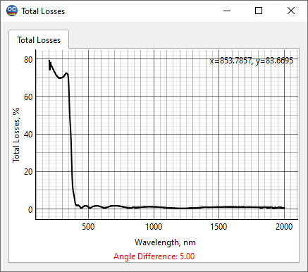

Total Losses
This option allows for the estimation of the total loss values. These values are calculated using the simple formula A = 1 - R - T. To display these values, the current measurement data should include both reflectance and transmittance values for the common wavelength region and for the same incidence angle.
